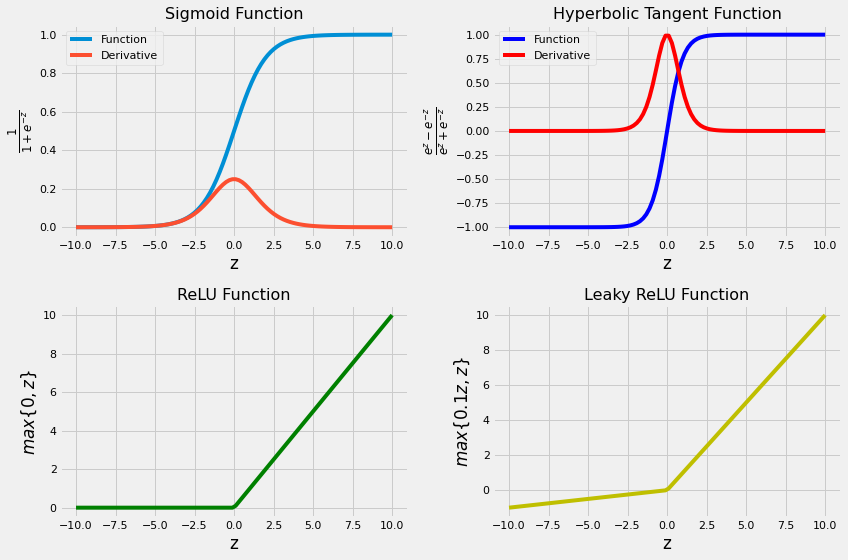
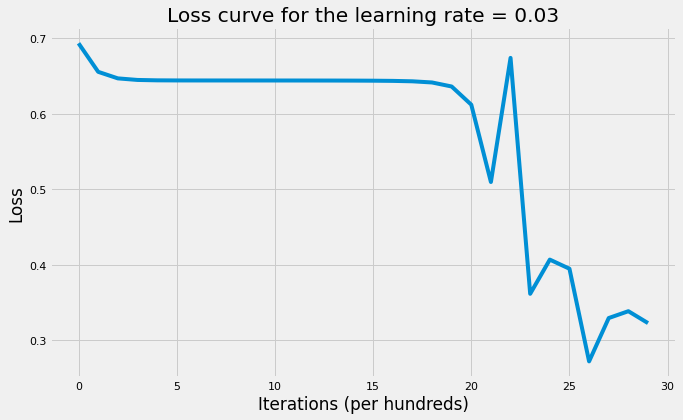
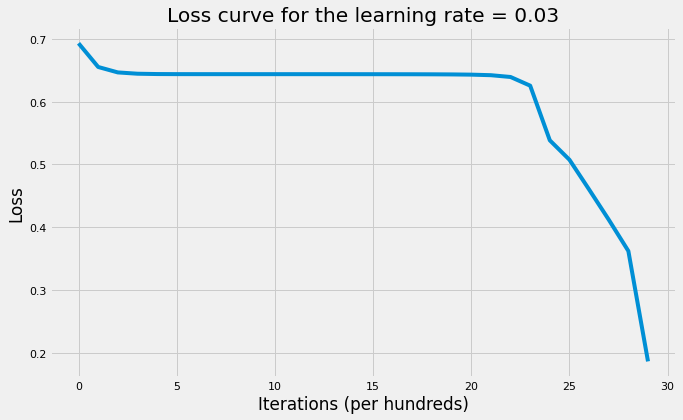

Code
import os as os
import h5py
import matplotlib.pyplot as plt
import numpy as np
import seaborn as sns
%matplotlib inline
sns.set_context("notebook")
plt.style.use("fivethirtyeight")
According to Universal Approximate Theorem, Neural Networks can approximate as well as learn and represent any function given a large enough layer and desired error margin. The way neural network learns the true function is by building complex representations on top of simple ones. On each hidden layer, the neural network learns new feature space by first compute the affine (linear) transformations of the given inputs and then apply non-linear function which in turn will be the input of the next layer. This process will continue until we reach the output layer. Therefore, we can define neural network as information flows from inputs through hidden layers towards the output. For a 3-layers neural network, the learned function would be: \(f(x) = f_3(f_2(f_1(x)))\) where:
Therefore, on each layer we learn different representation that gets more complicated with later hidden layers.Below is an example of a 3-layers neural network (we don’t count input layer):

For example, computers can’t understand images directly and don’t know what to do with pixels data. However, a neural network can build a simple representation of the image in the early hidden layers that identifies edges. Given the first hidden layer output, it can learn corners and contours. Given the second hidden layer, it can learn parts such as nose. Finally, it can learn the object identity.
Since truth is never linear and representation is very critical to the performance of a machine learning algorithm, neural network can help us build very complex models and leave it to the algorithm to learn such representations without worrying about feature engineering that takes practitioners very long time and effort to curate a good representation.
The post has two parts:
import os as os
import h5py
import matplotlib.pyplot as plt
import numpy as np
import seaborn as sns
%matplotlib inline
sns.set_context("notebook")
plt.style.use("fivethirtyeight")The input \(X\) provides the initial information that then propagates to the hidden units at each layer and finally produce the output \(\widehat{Y}\). The architecture of the network entails determining its depth, width, and activation functions used on each layer. Depth is the number of hidden layers. Width is the number of units (nodes) on each hidden layer since we don’t control neither input layer nor output layer dimensions. There are quite a few set of activation functions such Rectified Linear Unit, Sigmoid, Hyperbolic tangent, etc. Research has proven that deeper networks outperform networks with more hidden units. Therefore, it’s always better and won’t hurt to train a deeper network (with diminishing returns).
Lets first introduce some notations that will be used throughout the post:
Next, we’ll write down the dimensions of a multi-layer neural network in the general form to help us in matrix multiplication because one of the major challenges in implementing a neural network is getting the dimensions right.
The two equations we need to implement forward propagations are: \[Z^l = W^lA^{l - 1} + b ^l\tag1\\{}\] \[A^l = g^l(Z^l) = g^l(W^lA^{l - 1} + b ^l)\tag2\] These computations will take place on each layer.
We’ll first initialize the weight matrices and the bias vectors. It’s important to note that we shouldn’t initialize all the parameters to zero because doing so will lead the gradients to be equal and on each iteration the output would be the same and the learning algorithm won’t learn anything. Therefore, it’s important to randomly initialize the parameters to values between 0 and 1. It’s also recommended to multiply the random values by small scalar such as 0.01 to make the activation units active and be on the regions where activation functions’ derivatives are not close to zero.
# Initialize parameters
def initialize_parameters(layers_dims):
"""
Initialize parameters dictionary.
Weight matrices will be initialized to random values from uniform normal
distribution.
bias vectors will be initialized to zeros.
Arguments
---------
layers_dims : list or array-like
dimensions of each layer in the network.
Returns
-------
parameters : dict
weight matrix and the bias vector for each layer.
"""
np.random.seed(1)
parameters = {}
L = len(layers_dims)
for l in range(1, L):
parameters["W" + str(l)] = (
np.random.randn(layers_dims[l], layers_dims[l - 1]) * 0.01
)
parameters["b" + str(l)] = np.zeros((layers_dims[l], 1))
assert parameters["W" + str(l)].shape == (layers_dims[l], layers_dims[l - 1])
assert parameters["b" + str(l)].shape == (layers_dims[l], 1)
return parametersThere is no definitive guide for which activation function works best on specific problems. It’s a trial and error process where one should try different set of functions and see which one works best on the problem at hand. We’ll cover 4 of the most commonly used activation functions:
If you’re not sure which activation function to choose, start with ReLU.
Next, we’ll implement the above activation functions and draw a graph for each one to make it easier to see the domain and range of each function.
# Define activation functions that will be used in forward propagation
def sigmoid(Z):
"""
Computes the sigmoid of Z element-wise.
Arguments
---------
Z : array
output of affine transformation.
Returns
-------
A : array
post activation output.
Z : array
output of affine transformation.
"""
A = 1 / (1 + np.exp(-Z))
return A, Z
def tanh(Z):
"""
Computes the Hyperbolic Tagent of Z elemnet-wise.
Arguments
---------
Z : array
output of affine transformation.
Returns
-------
A : array
post activation output.
Z : array
output of affine transformation.
"""
A = np.tanh(Z)
return A, Z
def relu(Z):
"""
Computes the Rectified Linear Unit (ReLU) element-wise.
Arguments
---------
Z : array
output of affine transformation.
Returns
-------
A : array
post activation output.
Z : array
output of affine transformation.
"""
A = np.maximum(0, Z)
return A, Z
def leaky_relu(Z):
"""
Computes Leaky Rectified Linear Unit element-wise.
Arguments
---------
Z : array
output of affine transformation.
Returns
-------
A : array
post activation output.
Z : array
output of affine transformation.
"""
A = np.maximum(0.1 * Z, Z)
return A, Z# Plot the 4 activation functions
z = np.linspace(-10, 10, 100)
# Computes post-activation outputs
A_sigmoid, z = sigmoid(z)
A_tanh, z = tanh(z)
A_relu, z = relu(z)
A_leaky_relu, z = leaky_relu(z)
# Plot sigmoid
plt.figure(figsize=(12, 8))
plt.subplot(2, 2, 1)
plt.plot(z, A_sigmoid, label="Function")
plt.plot(z, A_sigmoid * (1 - A_sigmoid), label="Derivative")
plt.legend(loc="upper left")
plt.xlabel("z")
plt.ylabel(r"$\frac{1}{1 + e^{-z}}$")
plt.title("Sigmoid Function", fontsize=16)
# Plot tanh
plt.subplot(2, 2, 2)
plt.plot(z, A_tanh, "b", label="Function")
plt.plot(z, 1 - np.square(A_tanh), "r", label="Derivative")
plt.legend(loc="upper left")
plt.xlabel("z")
plt.ylabel(r"$\frac{e^z - e^{-z}}{e^z + e^{-z}}$")
plt.title("Hyperbolic Tangent Function", fontsize=16)
# plot relu
plt.subplot(2, 2, 3)
plt.plot(z, A_relu, "g")
plt.xlabel("z")
plt.ylabel(r"$max\{0, z\}$")
plt.title("ReLU Function", fontsize=16)
# plot leaky relu
plt.subplot(2, 2, 4)
plt.plot(z, A_leaky_relu, "y")
plt.xlabel("z")
plt.ylabel(r"$max\{0.1z, z\}$")
plt.title("Leaky ReLU Function", fontsize=16)
plt.tight_layout()
Given its inputs from previous layer, each unit computes affine transformation \(z = W^Tx + b\) and then apply an activation function \(g(z)\) such as ReLU element-wise. During the process, we’ll store (cache) all variables computed and used on each layer to be used in back-propagation. We’ll write first two helper functions that will be used in the L-model forward propagation to make it easier to debug. Keep in mind that on each layer, we may have different activation function.
# Define helper functions that will be used in L-model forward prop
def linear_forward(A_prev, W, b):
"""
Computes affine transformation of the input.
Arguments
---------
A_prev : 2d-array
activations output from previous layer.
W : 2d-array
weight matrix, shape: size of current layer x size of previuos layer.
b : 2d-array
bias vector, shape: size of current layer x 1.
Returns
-------
Z : 2d-array
affine transformation output.
cache : tuple
stores A_prev, W, b to be used in backpropagation.
"""
Z = np.dot(W, A_prev) + b
cache = (A_prev, W, b)
return Z, cache
def linear_activation_forward(A_prev, W, b, activation_fn):
"""
Computes post-activation output using non-linear activation function.
Arguments
---------
A_prev : 2d-array
activations output from previous layer.
W : 2d-array
weight matrix, shape: size of current layer x size of previuos layer.
b : 2d-array
bias vector, shape: size of current layer x 1.
activation_fn : str
non-linear activation function to be used: "sigmoid", "tanh", "relu".
Returns
-------
A : 2d-array
output of the activation function.
cache : tuple
stores linear_cache and activation_cache. ((A_prev, W, b), Z) to be used in backpropagation.
"""
assert (
activation_fn == "sigmoid" or activation_fn == "tanh" or activation_fn == "relu"
)
if activation_fn == "sigmoid":
Z, linear_cache = linear_forward(A_prev, W, b)
A, activation_cache = sigmoid(Z)
elif activation_fn == "tanh":
Z, linear_cache = linear_forward(A_prev, W, b)
A, activation_cache = tanh(Z)
elif activation_fn == "relu":
Z, linear_cache = linear_forward(A_prev, W, b)
A, activation_cache = relu(Z)
assert A.shape == (W.shape[0], A_prev.shape[1])
cache = (linear_cache, activation_cache)
return A, cache
def L_model_forward(X, parameters, hidden_layers_activation_fn="relu"):
"""
Computes the output layer through looping over all units in topological
order.
Arguments
---------
X : 2d-array
input matrix of shape input_size x training_examples.
parameters : dict
contains all the weight matrices and bias vectors for all layers.
hidden_layers_activation_fn : str
activation function to be used on hidden layers: "tanh", "relu".
Returns
-------
AL : 2d-array
probability vector of shape 1 x training_examples.
caches : list
that contains L tuples where each layer has: A_prev, W, b, Z.
"""
A = X
caches = []
L = len(parameters) // 2
for l in range(1, L):
A_prev = A
A, cache = linear_activation_forward(
A_prev,
parameters["W" + str(l)],
parameters["b" + str(l)],
activation_fn=hidden_layers_activation_fn,
)
caches.append(cache)
AL, cache = linear_activation_forward(
A, parameters["W" + str(L)], parameters["b" + str(L)], activation_fn="sigmoid"
)
caches.append(cache)
assert AL.shape == (1, X.shape[1])
return AL, cachesWe’ll use the binary Cross-Entropy cost. It uses the log-likelihood method to estimate its error. The cost is: \[J(W, b) = -\frac{1}{m}\sum_{i = 1}^m\big(y^ilog(\widehat{y^i}) + (1 - y^i)log(1 - \widehat{y^i})\big)\tag3\] The above cost function is convex; however, neural network usually stuck on a local minimum and is not guaranteed to find the optimal parameters. We’ll use here gradient-based learning.
# Compute cross-entropy cost
def compute_cost(AL, y):
"""
Computes the binary Cross-Entropy cost.
Arguments
---------
AL : 2d-array
probability vector of shape 1 x training_examples.
y : 2d-array
true "label" vector.
Returns
-------
cost : float
binary cross-entropy cost.
"""
m = y.shape[1]
cost = -(1 / m) * np.sum(
np.multiply(y, np.log(AL)) + np.multiply(1 - y, np.log(1 - AL))
)
return costBackpropagation allows the information to go back from the cost backward through the network in order to compute the gradient. Therefore, loop over the nodes starting at the final node in reverse topological order to compute the derivative of the final node output with respect to each edge’s node tail. Doing so will help us know who is responsible for the most error and change the parameters in that direction. The following derivatives’ formulas will help us write the back-propagate functions: \[dA^L = \frac{A^L - Y}{A^L(1 - A^L)}\tag4\\{}\] \[dZ^L = A^L - Y\tag5\\{}\] \[dW^l = \frac{1}{m}dZ^l{A^{l - 1}}^T\tag6\\{}\] \[db^l = \frac{1}{m}\sum_i(dZ^l)\tag7\\{}\] \[dA^{l - 1} = {W^l}^TdZ^l\tag8\\{}\] \[dZ^{l} = dA^l*g^{'l}(Z^l)\tag9\\{}\] Since \(b^l\) is always a vector, the sum would be across rows (since each column is an example).
# Define derivative of activation functions w.r.t z that will be used in back-propagation
def sigmoid_gradient(dA, Z):
"""
Computes the gradient of sigmoid output w.r.t input Z.
Arguments
---------
dA : 2d-array
post-activation gradient, of any shape.
Z : 2d-array
input used for the activation fn on this layer.
Returns
-------
dZ : 2d-array
gradient of the cost with respect to Z.
"""
A, Z = sigmoid(Z)
dZ = dA * A * (1 - A)
return dZ
def tanh_gradient(dA, Z):
"""
Computes the gradient of hyperbolic tangent output w.r.t input Z.
Arguments
---------
dA : 2d-array
post-activation gradient, of any shape.
Z : 2d-array
input used for the activation fn on this layer.
Returns
-------
dZ : 2d-array
gradient of the cost with respect to Z.
"""
A, Z = tanh(Z)
dZ = dA * (1 - np.square(A))
return dZ
def relu_gradient(dA, Z):
"""
Computes the gradient of ReLU output w.r.t input Z.
Arguments
---------
dA : 2d-array
post-activation gradient, of any shape.
Z : 2d-array
input used for the activation fn on this layer.
Returns
-------
dZ : 2d-array
gradient of the cost with respect to Z.
"""
A, Z = relu(Z)
dZ = np.multiply(dA, np.int64(A > 0))
return dZ
# define helper functions that will be used in L-model back-prop
def linear_backword(dZ, cache):
"""
Computes the gradient of the output w.r.t weight, bias, and post-activation
output of (l - 1) layers at layer l.
Arguments
---------
dZ : 2d-array
gradient of the cost w.r.t. the linear output (of current layer l).
cache : tuple
values of (A_prev, W, b) coming from the forward propagation in the current layer.
Returns
-------
dA_prev : 2d-array
gradient of the cost w.r.t. the activation (of the previous layer l-1).
dW : 2d-array
gradient of the cost w.r.t. W (current layer l).
db : 2d-array
gradient of the cost w.r.t. b (current layer l).
"""
A_prev, W, b = cache
m = A_prev.shape[1]
dW = (1 / m) * np.dot(dZ, A_prev.T)
db = (1 / m) * np.sum(dZ, axis=1, keepdims=True)
dA_prev = np.dot(W.T, dZ)
assert dA_prev.shape == A_prev.shape
assert dW.shape == W.shape
assert db.shape == b.shape
return dA_prev, dW, db
def linear_activation_backward(dA, cache, activation_fn):
"""
Arguments
---------
dA : 2d-array
post-activation gradient for current layer l.
cache : tuple
values of (linear_cache, activation_cache).
activation : str
activation used in this layer: "sigmoid", "tanh", or "relu".
Returns
-------
dA_prev : 2d-array
gradient of the cost w.r.t. the activation (of the previous layer l-1), same shape as A_prev.
dW : 2d-array
gradient of the cost w.r.t. W (current layer l), same shape as W.
db : 2d-array
gradient of the cost w.r.t. b (current layer l), same shape as b.
"""
linear_cache, activation_cache = cache
if activation_fn == "sigmoid":
dZ = sigmoid_gradient(dA, activation_cache)
dA_prev, dW, db = linear_backword(dZ, linear_cache)
elif activation_fn == "tanh":
dZ = tanh_gradient(dA, activation_cache)
dA_prev, dW, db = linear_backword(dZ, linear_cache)
elif activation_fn == "relu":
dZ = relu_gradient(dA, activation_cache)
dA_prev, dW, db = linear_backword(dZ, linear_cache)
return dA_prev, dW, db
def L_model_backward(AL, y, caches, hidden_layers_activation_fn="relu"):
"""
Computes the gradient of output layer w.r.t weights, biases, etc. starting
on the output layer in reverse topological order.
Arguments
---------
AL : 2d-array
probability vector, output of the forward propagation (L_model_forward()).
y : 2d-array
true "label" vector (containing 0 if non-cat, 1 if cat).
caches : list
list of caches for all layers.
hidden_layers_activation_fn :
activation function used on hidden layers: "tanh", "relu".
Returns
-------
grads : dict
with the gradients.
"""
y = y.reshape(AL.shape)
L = len(caches)
grads = {}
dAL = np.divide(AL - y, np.multiply(AL, 1 - AL))
(
grads["dA" + str(L - 1)],
grads["dW" + str(L)],
grads["db" + str(L)],
) = linear_activation_backward(dAL, caches[L - 1], "sigmoid")
for l in range(L - 1, 0, -1):
current_cache = caches[l - 1]
(
grads["dA" + str(l - 1)],
grads["dW" + str(l)],
grads["db" + str(l)],
) = linear_activation_backward(
grads["dA" + str(l)], current_cache, hidden_layers_activation_fn
)
return grads
# define the function to update both weight matrices and bias vectors
def update_parameters(parameters, grads, learning_rate):
"""
Update the parameters' values using gradient descent rule.
Arguments
---------
parameters : dict
contains all the weight matrices and bias vectors for all layers.
grads : dict
stores all gradients (output of L_model_backward).
Returns
-------
parameters : dict
updated parameters.
"""
L = len(parameters) // 2
for l in range(1, L + 1):
parameters["W" + str(l)] = (
parameters["W" + str(l)] - learning_rate * grads["dW" + str(l)]
)
parameters["b" + str(l)] = (
parameters["b" + str(l)] - learning_rate * grads["db" + str(l)]
)
return parametersThe dataset that we’ll be working on has 209 images. Each image is 64 x 64 pixels on RGB scale. We’ll build a neural network to classify if the image has a cat or not. Therefore, \(y^i \in \{0, 1\}.\)
# Import training dataset
train_dataset = h5py.File("../../data/train_catvnoncat.h5")
X_train = np.array(train_dataset["train_set_x"])
y_train = np.array(train_dataset["train_set_y"])
test_dataset = h5py.File("../../data/test_catvnoncat.h5")
X_test = np.array(test_dataset["test_set_x"])
y_test = np.array(test_dataset["test_set_y"])
# print the shape of input data and label vector
print(
f"""Original dimensions:\n{20 * '-'}\nTraining: {X_train.shape}, {y_train.shape}
Test: {X_test.shape}, {y_test.shape}"""
)
# plot cat image
plt.figure(figsize=(6, 6))
plt.imshow(X_train[50])
plt.axis("off")
# Transform input data and label vector
X_train = X_train.reshape(209, -1).T
y_train = y_train.reshape(-1, 209)
X_test = X_test.reshape(50, -1).T
y_test = y_test.reshape(-1, 50)
# standarize the data
X_train = X_train / 255
X_test = X_test / 255
print(
f"""\nNew dimensions:\n{15 * '-'}\nTraining: {X_train.shape}, {y_train.shape}
Test: {X_test.shape}, {y_test.shape}"""
)Original dimensions:
--------------------
Training: (209, 64, 64, 3), (209,)
Test: (50, 64, 64, 3), (50,)
New dimensions:
---------------
Training: (12288, 209), (1, 209)
Test: (12288, 50), (1, 50)Now, our dataset is ready to be used and test our neural network implementation. Let’s first write multi-layer model function to implement gradient-based learning using predefined number of iterations and learning rate.
# Define the multi-layer model using all the helper functions we wrote before
def L_layer_model(
X,
y,
layers_dims,
learning_rate=0.01,
num_iterations=3000,
print_cost=True,
hidden_layers_activation_fn="relu",
):
"""
Implements multilayer neural network using gradient descent as the
learning algorithm.
Arguments
---------
X : 2d-array
data, shape: number of examples x num_px * num_px * 3.
y : 2d-array
true "label" vector, shape: 1 x number of examples.
layers_dims : list
input size and size of each layer, length: number of layers + 1.
learning_rate : float
learning rate of the gradient descent update rule.
num_iterations : int
number of iterations of the optimization loop.
print_cost : bool
if True, it prints the cost every 100 steps.
hidden_layers_activation_fn : str
activation function to be used on hidden layers: "tanh", "relu".
Returns
-------
parameters : dict
parameters learnt by the model. They can then be used to predict test examples.
"""
np.random.seed(1)
# initialize parameters
parameters = initialize_parameters(layers_dims)
# intialize cost list
cost_list = []
# iterate over num_iterations
for i in range(num_iterations):
# iterate over L-layers to get the final output and the cache
AL, caches = L_model_forward(X, parameters, hidden_layers_activation_fn)
# compute cost to plot it
cost = compute_cost(AL, y)
# iterate over L-layers backward to get gradients
grads = L_model_backward(AL, y, caches, hidden_layers_activation_fn)
# update parameters
parameters = update_parameters(parameters, grads, learning_rate)
# append each 100th cost to the cost list
if (i + 1) % 100 == 0 and print_cost:
print(f"The cost after {i + 1} iterations is: {cost:.4f}")
if i % 100 == 0:
cost_list.append(cost)
# plot the cost curve
plt.figure(figsize=(10, 6))
plt.plot(cost_list)
plt.xlabel("Iterations (per hundreds)")
plt.ylabel("Loss")
plt.title(f"Loss curve for the learning rate = {learning_rate}")
return parameters
def accuracy(X, parameters, y, activation_fn="relu"):
"""
Computes the average accuracy rate.
Arguments
---------
X : 2d-array
data, shape: number of examples x num_px * num_px * 3.
parameters : dict
learnt parameters.
y : 2d-array
true "label" vector, shape: 1 x number of examples.
activation_fn : str
activation function to be used on hidden layers: "tanh", "relu".
Returns
-------
accuracy : float
accuracy rate after applying parameters on the input data
"""
probs, caches = L_model_forward(X, parameters, activation_fn)
labels = (probs >= 0.5) * 1
accuracy = np.mean(labels == y) * 100
return f"The accuracy rate is: {accuracy:.2f}%."Next, we’ll train two versions of the neural network where each one will use different activation function on hidden layers: One will use rectified linear unit (ReLU) and the second one will use hyperbolic tangent function (tanh). Finally we’ll use the parameters we get from both neural networks to classify test examples and compute the test accuracy rates for each version to see which activation function works best on this problem.
# Setting layers dims
layers_dims = [X_train.shape[0], 5, 5, 1]
# NN with tanh activation fn
parameters_tanh = L_layer_model(
X_train,
y_train,
layers_dims,
learning_rate=0.03,
num_iterations=3000,
hidden_layers_activation_fn="tanh",
)
# Print the accuracy
accuracy(X_test, parameters_tanh, y_test, activation_fn="tanh")The cost after 100 iterations is: 0.6556
The cost after 200 iterations is: 0.6468
The cost after 300 iterations is: 0.6447
The cost after 400 iterations is: 0.6441
The cost after 500 iterations is: 0.6440
The cost after 600 iterations is: 0.6440
The cost after 700 iterations is: 0.6440
The cost after 800 iterations is: 0.6439
The cost after 900 iterations is: 0.6439
The cost after 1000 iterations is: 0.6439
The cost after 1100 iterations is: 0.6439
The cost after 1200 iterations is: 0.6439
The cost after 1300 iterations is: 0.6438
The cost after 1400 iterations is: 0.6438
The cost after 1500 iterations is: 0.6437
The cost after 1600 iterations is: 0.6434
The cost after 1700 iterations is: 0.6429
The cost after 1800 iterations is: 0.6413
The cost after 1900 iterations is: 0.6361
The cost after 2000 iterations is: 0.6124
The cost after 2100 iterations is: 0.5112
The cost after 2200 iterations is: 0.5001
The cost after 2300 iterations is: 0.3644
The cost after 2400 iterations is: 0.3393
The cost after 2500 iterations is: 0.4184
The cost after 2600 iterations is: 0.2372
The cost after 2700 iterations is: 0.4299
The cost after 2800 iterations is: 0.3064
The cost after 2900 iterations is: 0.2842
The cost after 3000 iterations is: 0.1902'The accuracy rate is: 70.00%.'
# NN with relu activation fn
parameters_relu = L_layer_model(
X_train,
y_train,
layers_dims,
learning_rate=0.03,
num_iterations=3000,
hidden_layers_activation_fn="relu",
)
# Print the accuracy
accuracy(X_test, parameters_relu, y_test, activation_fn="relu")The cost after 100 iterations is: 0.6556
The cost after 200 iterations is: 0.6468
The cost after 300 iterations is: 0.6447
The cost after 400 iterations is: 0.6441
The cost after 500 iterations is: 0.6440
The cost after 600 iterations is: 0.6440
The cost after 700 iterations is: 0.6440
The cost after 800 iterations is: 0.6440
The cost after 900 iterations is: 0.6440
The cost after 1000 iterations is: 0.6440
The cost after 1100 iterations is: 0.6439
The cost after 1200 iterations is: 0.6439
The cost after 1300 iterations is: 0.6439
The cost after 1400 iterations is: 0.6439
The cost after 1500 iterations is: 0.6439
The cost after 1600 iterations is: 0.6439
The cost after 1700 iterations is: 0.6438
The cost after 1800 iterations is: 0.6437
The cost after 1900 iterations is: 0.6435
The cost after 2000 iterations is: 0.6432
The cost after 2100 iterations is: 0.6423
The cost after 2200 iterations is: 0.6395
The cost after 2300 iterations is: 0.6259
The cost after 2400 iterations is: 0.5408
The cost after 2500 iterations is: 0.5262
The cost after 2600 iterations is: 0.4727
The cost after 2700 iterations is: 0.4386
The cost after 2800 iterations is: 0.3493
The cost after 2900 iterations is: 0.1877
The cost after 3000 iterations is: 0.3641'The accuracy rate is: 42.00%.'
The purpose of this artcile is to code Deep Neural Network step-by-step and explain the important concepts while doing that. We don’t really care about the accuracy rate at this moment since there are tons of things we could’ve done to increase the accuracy which would be the subject of following artciles. Below are some takeaways: